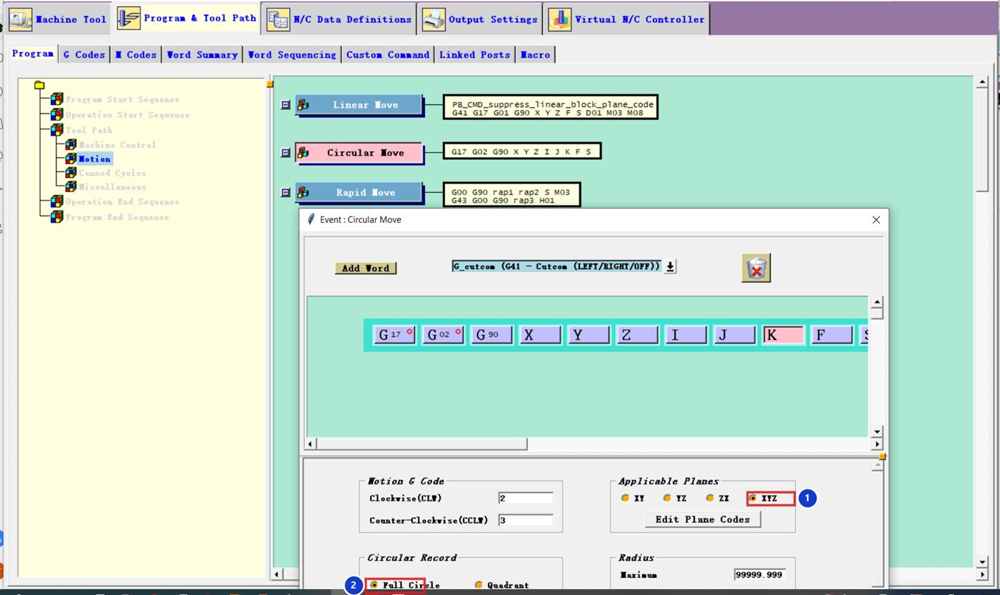
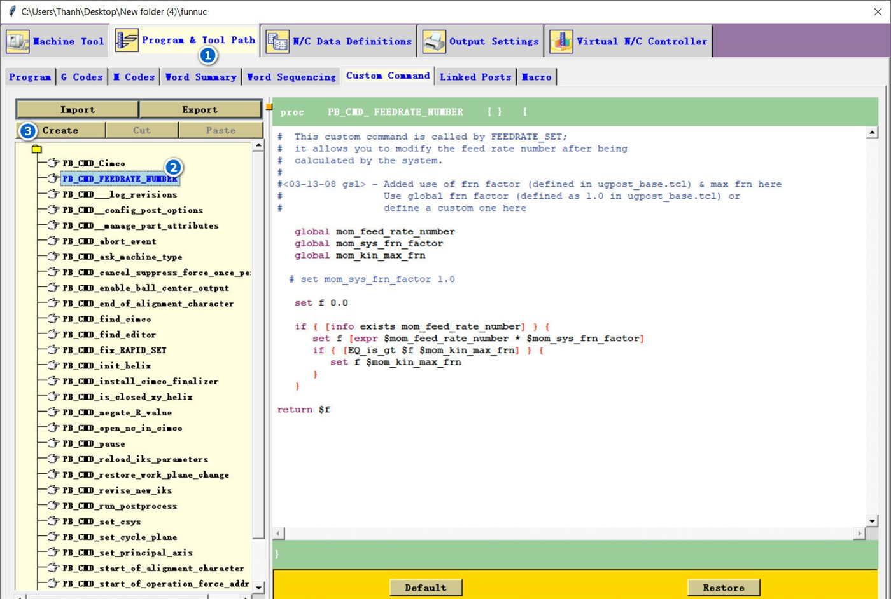
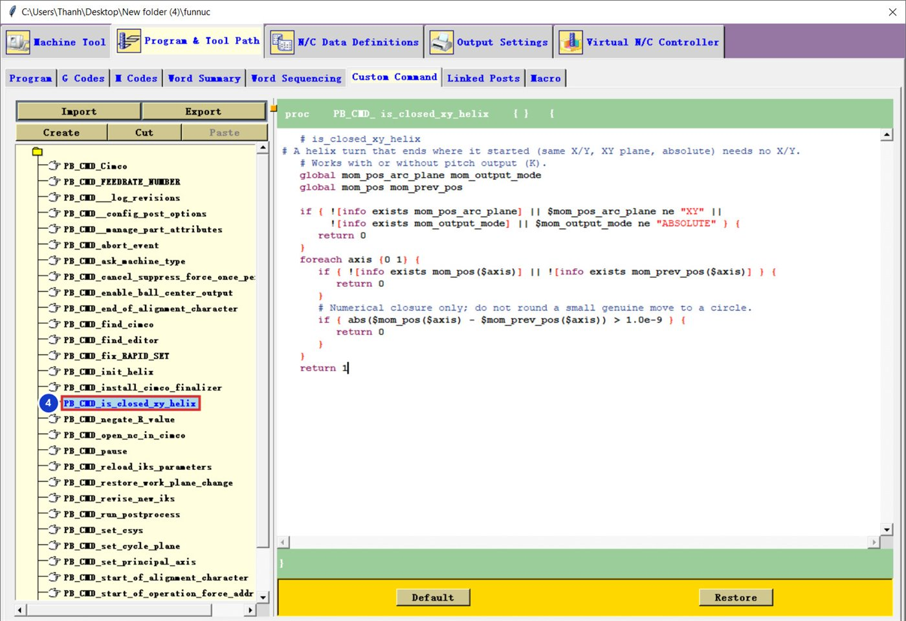
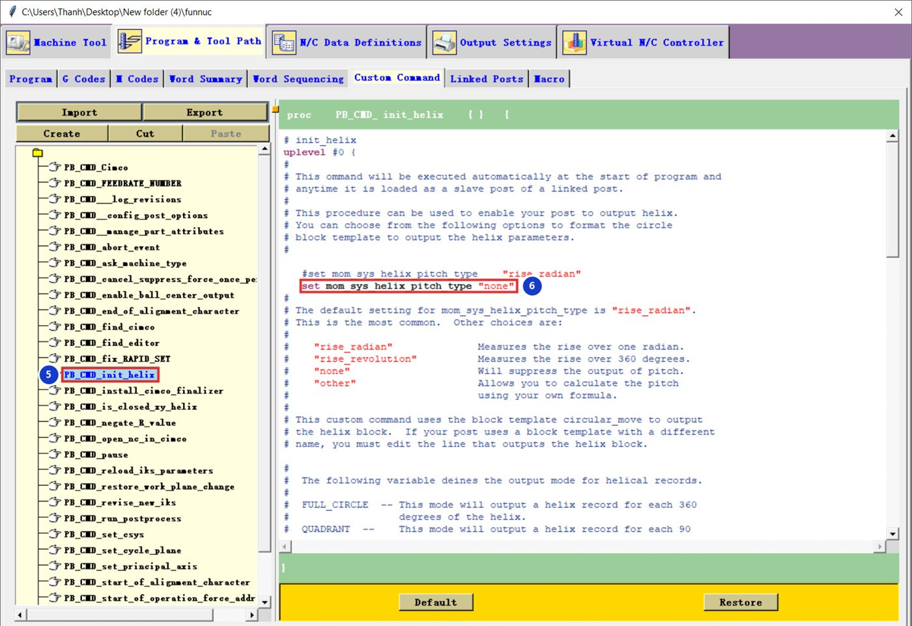

Kết quả
G0G90G54X7.Y0
Z0
G3Z-1.I-7.J0F2500.
Z-2.I-7.J0
Z-3.I-7.J0
...
Z-10.I-7.J0
I-7.J0G1Z-54.947F2000.
G19G3Y-31.Z-9.582J-54.998K-.062
Y-54.923Z-52.674J30.889K-45.335
G1Y-55.Z-55.
X48.006
G2Y30.999Z-9.58J54.999K-.009Tải về: code 2 lệnh và file NC mẫu.
Phần 1 — xuất cung ở mọi mặt phẳng
Circular Move: XYZ và Full Circle
Program & Tool Path → Program → Tool Path → Motion → Circular Move. Chọn Applicable Planes = XYZ 1 và Circular Record = Full Circle 2.


Muốn xuất bán kính R thay cho I J K, xem bài Xuất cung bằng IJK hay R (đang soạn).
Phần 2 — xoắn ốc gọn
Tạo Custom Command mới
Custom Command, chọn một lệnh bất kỳ trong danh sách rồi bấm Create (đánh số 1–3 trong ảnh).


Lệnh is_closed_xy_helix
Tên is_closed_xy_helix 4, dán phần 1 trong file tải về. Lệnh này kiểm tra vòng xoắn có kết thúc đúng điểm bắt đầu (cùng X, Y) hay không.


PB_CMD_is_closed_xy_helix.Lệnh init_helix
Tạo tiếp lệnh tên init_helix 5, dán phần 2. Lệnh có tên bắt đầu bằng init_ được Post Builder tự chạy khi bắt đầu chương trình, không cần kéo vào đâu.


PB_CMD_init_helix · 6 "none" = bỏ bước xoắn K.Hai chỗ đã sửa so với lệnh mẫu của Siemens:
| Chỗ | Mẫu | Sửa thành |
|---|---|---|
| Bước xoắn | "rise_radian" | "none" — không in K |
| Vòng kín XY | luôn in X Y Z | chỉ in Z (gọi PB_CMD_is_closed_xy_helix) |
Vòng cuối không trọn (ví dụ X6.982Y.5…) và chế độ G91 vẫn in đủ X Y Z như cũ. Máy cần hiểu xoắn ốc G2/G3 có Z (hầu hết Fanuc đều được).